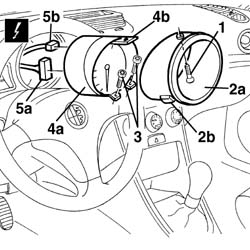

5560B03 rev counter - r r
- Path
- Procedures > 55 ELECTRICAL EQUIPMENT > 5560 INSTRUMENT PANEL > 5560B analogue control panel > 5560B03 rev counter - r r
- Kind
- repair procedure (removal / refitting; the operation number is the code)
- Applies to
- all engines; all production periods
- Interactive page
- https://sloeber94.github.io/elrnDB-a156/en/#/3238497
Applies to: all engines; all production periods
 Removing
Removing
 Refitting
Refitting1. Unscrew the screw.
2. Remove the frame (2a) and take it off the check clamps (2b).
3. Unscrew the screws.
4. Extract the speedometer (4a) from the support (4b) e move it.
5. Disconnect the electric connections (5a, 5b).
 | Name | Connector |
|---|---|---|
5a | Rev counter |
| Name | Connector |
|---|---|---|
5b | Rev counter |

Applies to: all engines; all production periods
Refitting
RemovingCheck that the instrument is not damaged.
Connect the electric connections.
Reassemble the speedometer and fix it with the screws.
Reassemble the frame and fix it with the screw.
Check the functionality of the instrument and of the functions it checks.
Topics linked from this page (2)
Topics that link to this page (22)
- I30 LIGHTS CHECK NOT WORKING
- K01 REV COUNTER NOT WORKING
- K30 MINIMUM ENGINE OIL PRESSURE WARNING LIGHT NOT WORKING
- K40 BATTERY CHARGING WARNING LIGHT NOT WORKING
- K53 I.E. FAILURE WARNING LIGHT OFF / (DO NOT CARRY OUT INITIAL TEST)
- 5010B24 under-facia air ducts r r
- 5020A10 heater box - r+r
- 5020L10 additional heater system boiler - r r
- 5040B30 expansion valve (tube orifice) - r+r
- 5040C10 air conditioner box - r+r
- 5040C50 air conditioner heater radiator - r+r
- 5040D52 air inlet and recirculation flap actuator - r r
- 5040D76 air contitioner distribution flap control motor - r r
- 5040D84 air conditioner left hand air mixer flap control motor - r r
- 5040D86 air conditioner right hand air mixer flap control motor - r r
- 5040D90 air conditioner system wiring bundle - r r
- 5505A26 bonnet wiring - r r
- 5505C31 under-facia wiring - r r
- 5505C41 cabin wiring - r r
- 5560B06 instrument lightbulb/s - r+r - includes instrument r+r
- 7040A10 instrument facia trim - r+r
- 7040A97 facia trim support beam - r r